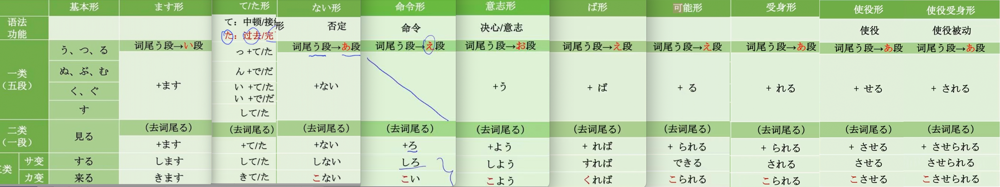

一类动词，五段动词
| あ | い | う | え | お |
|---|---|---|---|---|
| 書かない（ない形） | 書きます | 書く（原型） | 書け （命令形） | 書こう （意志形） |
| 書かれる（受身形） | 書けば （ば形） 条件 | |||
| 書かせる(使役) | 書ける （可能形） | |||
| 書かされる(使役受身) |
二类动词，一段动词
上一段动词：い＋る 見る、起きる
下一段动词：え＋る 食べる、寝る
三类动词：不规则变化动词
サ、か变

ら抜き言葉（らぬきことば）
見れる、来れる
一类动词（五段）
あ、う、お＋る结尾===一类
| 原型 | ます型 | て型 | た型 | ない形型 |
|---|---|---|---|---|
| ある | あります | あって | あった | ない |
| 休む | 休みます | 休んで | 休んだ | 休まない |
| 働く | 働きます | 働いて | 働いた | 働かない |
| 始まる | 始まります | 始まって | 始まった | 始まらない |
| 終わる（おわ） | 終わります | 終わって | 終わった | 終わらない |
| 行く | 行きます | 行って | 行った | 行かない |
| 帰る（かえ）🌟 | 帰ります | 帰って | 帰った | 帰らない |
| 飲む | 飲みます | 飲んで | 飲んだ | 飲まない |
| 買う | 買います | 買って | 買った | 買わない |
| 撮る | 撮ります | 撮って | 撮った | 撮らない |
| 取る | 取ります | 取って | 取った | 取らない |
| 書く | 書きます | 書いて | 書いた | 書かない |
| 読む | 読みます | 読んで | 読んだ | 読まない |
| 聞く | 聞きます | 聞いて | 聞いた | 聞かない |
| 送る | 送ります | 送って | 送った | 送らない |
| もらう | もらいます | もらって | もらった | もらわない |
| 会う | 会います | 会って | 会った | 会わない |
| 作る | 作ります | 作って | 作った | 作らない |
| 出す | 出します | 出して | 出した | 出さない |
| 届く | 届きます | 届いて | 届いた | 届かない |
| 貸す | 貸します | 貸して | 貸した | 貸さない |
| 習う（なら） | 習います | 習って | 習った | 習わない |
| 分かる | 分かります | 分かって | 分かった | 分からない |
| 迷う | 迷います | 迷って | 迷った | 迷わない |
| ひろ | ||||
| 集まる | 集まります | 集まって | 集まった | 集まらない |
| 踊る | 踊ります | 踊って | 踊った | 踊らない |
| 払う | 払います | 払って | 払った | 払わない |
| 遊ぶ | 遊びます | 遊んで | 遊んだ | 遊ばない |
| 持つ | 持ちます | 持って | もった | 持たない |
| 拾う | 拾います | 拾って | 拾った | 拾わない |
| 教える🌟 | 教えます | 教えて | 教えた | 教えらない |
| 訳す | 訳します | 訳して | 訳した | 訳さない |
| 要る🌟 | 要ります | 要って | 要った | 要らない |
| 入る🌟 | 入ります | 入って | 入った | 入らない |
| 開く | 開きます | 開いて | 開いた | 開かない |
二类动词
い、え＋る结尾===二类
| 原型 | ます型 | て型 | た型 | ない形型 |
|---|---|---|---|---|
| いる | います | いて | いた | いない |
| 起きる | 起きます | 起きて | 起きた | 起きない |
| 寝る | 寝ます | 寝て | 寝た | 寝ない |
| 借りる | 借ります | まりて | 借りた | 借りない |
| 答える | 答えます | 答えて | 答えた | 答えない |
| くれる | くれます | くれて | くれた | くれない |
| 答える | 答えます | 答えて | 答えた | 答えない |
| 開ける | 開けます | 開けて | 開けた | 開けない |
| 壊れる | 壊れます | 壊れて | 壊れた | 壊れない |
| 入れる | 入れます | 入れて | 入れた | 入れない |
三类动词
| 原型 | ます型 | て型 | た型 | ない形型 |
|---|---|---|---|---|
| 勉強する | 勉強します | 勉強して | 勉強した | 勉強しない |
| する | します | して | した | しない |
| 来る （く） | 来ます | 来て | 来た | こない |
| 案内する | 案内します | 案内して | 案内した | 案内しない |
一类形容词
| 高い | |
|---|---|
| 熱い | |
二类形容词
| 嫌い | |
|---|---|
| 綺麗 |
-a ru 自动
-re ru 自动
-su 他动
| 自动词 | 他动词 |
|---|---|
| 開く | 開ける |
| 壊れ こわれ パソコンが壊れている | 壊す パソコンを壊した |
| 入れ | 入る |
| 汚れる よごれる 服が汚れている | 汚す よごす 服を汚す |
| 掛かる かかる 壁に絵が掛かっている | 掛ける かける 壁に絵をかける |
| 建つ たつ 家が建つ | 建てる たてる 家を建てる |
| 割れる われる 皿（さら）が割れている | 割る わる 皿を割った |
| 閉まる し ドアが閉まっている | 閉める し ドアを閉める |
| 落ちる おちる 柿（かき）が落ちる | 落とす おとす 柿を落とす |
| 消える きえる 字が消える | 消す けす 字を消す |
| 付く つく 粘 ご飯がついている | 付ける つける のりを付ける |
| 着く つく 李さんは東京ついた | 着ける つける 船（ふね）を岸（きし）に着ける |
| 始まる | 始める |